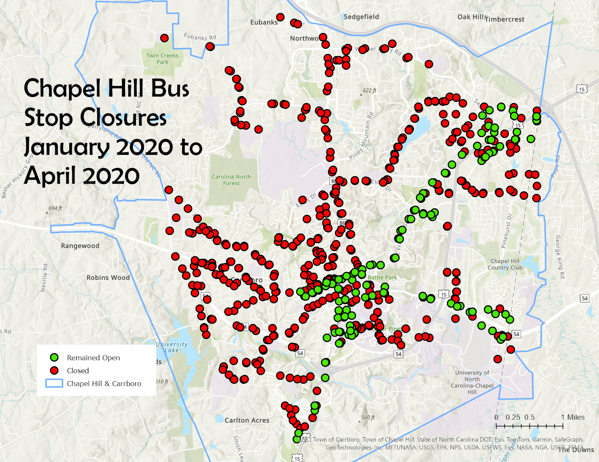
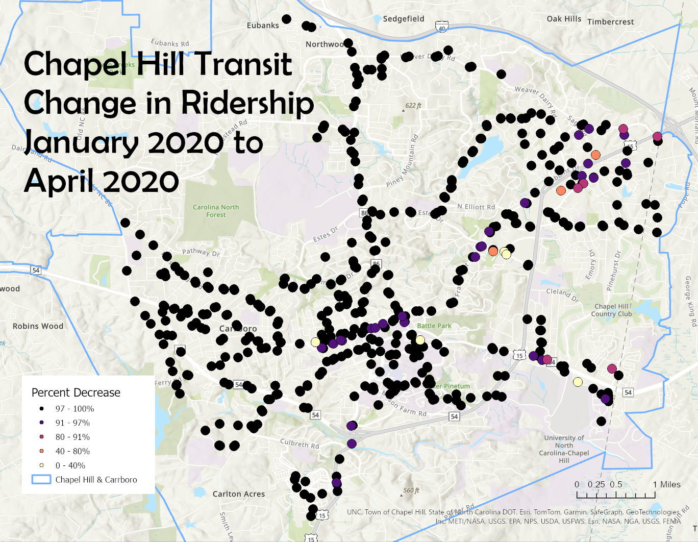
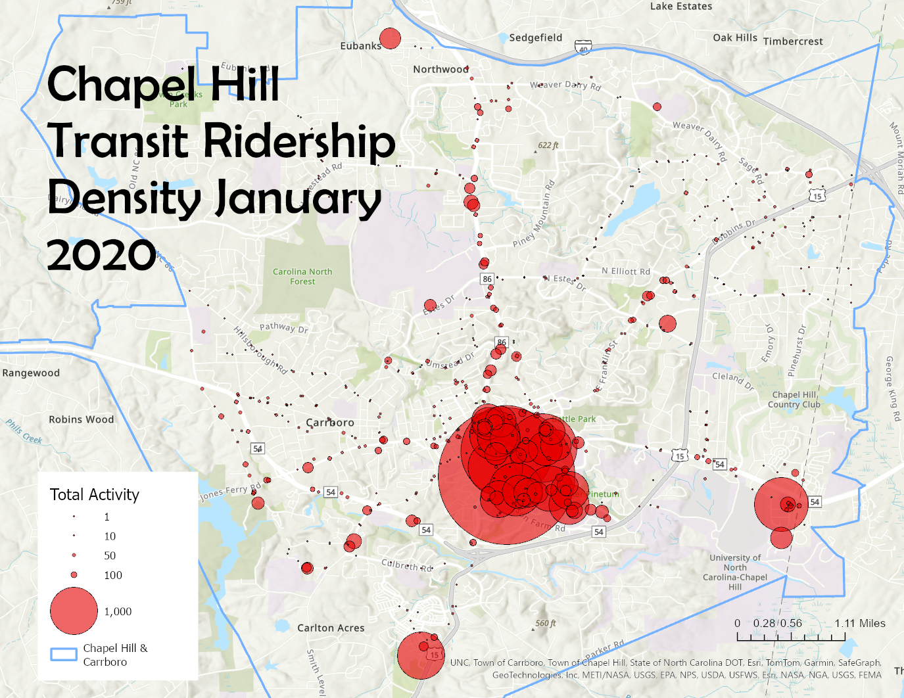

Chapel Hill Transit Ridership Recovery Post COVID-19
GEOG-456 Final Project - Suzanne Tyler
Data for this project was provided by Carolina Dwyer, Planning Manager for Chapel Hill Transit.
Introduction and Motivation
Public transportation was heavily impacted by the COVID-19 pandemic, and in many areas has failed to bounce back to pre-pandemic levels. Chapel Hill Transit has yet to return to pre-pandemic employee numbers or route frequency. In this project, I have attempted to visualize the impact of COVID on bus ridership in Chapel Hill in order to analyze the continued impacts of the pandemic, and pinpoint where ridership remains low.
Initial Impact of COVID-19 on Chapel Hill Transit
Between January 2020 and April 2020, 445 out of 583 operating bus stops in Chapel Hill were closed, leaving 138 open.

Ridership dropped by over 99% percent, from almost 45,000 average daily riders in January 2020 to less than 300 in April. Over 80% of all stops from Janurary 2020 saw a 100% decrease in ridersip.

When compared with the ridership density map, it is clear that the largest stops were among those with the largest decreaese in ridership.

382 stops were reopened by January 2021, and by January 2022 over 500 were back in service. Ridership, however, has been much slower to recover.
Ridership Recovery from January 2021 - March 2024